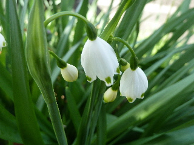
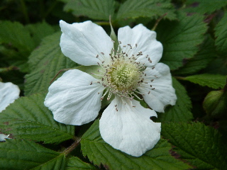
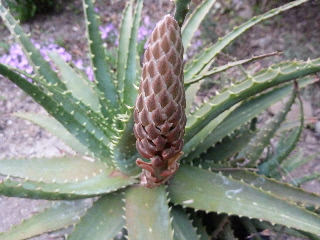
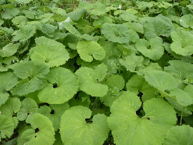
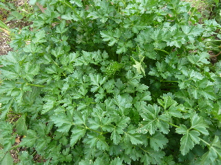
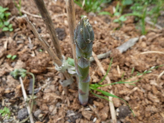

色んな花が咲いています。
2014/04/06
畑や庭の色んなところで花が咲いています。

これはスズラン？と思って調べてみるとスズランスイセンでした。
自分で植えていないものは、何？って思う事がよくあります。
気になったものは調べて、名前くらいは分かるようになりたいです。

クサイチゴの花も咲きました。
もうちょっとしたらクサイチゴが食べれますね。
苺の花を見ると、暖かい季節になったんだなーと実感します。
2014/04/06
畑や庭の色んなところで花が咲いています。

これはスズラン？と思って調べてみるとスズランスイセンでした。
自分で植えていないものは、何？って思う事がよくあります。
気になったものは調べて、名前くらいは分かるようになりたいです。

クサイチゴの花も咲きました。
もうちょっとしたらクサイチゴが食べれますね。
苺の花を見ると、暖かい季節になったんだなーと実感します。
2014/04/12
アロエの真ん中から、アスパラみたいなのが出て来ました。

もうちょっとしたら花が咲くのかな。
楽しみです。
2014/04/19
ふきがいっぱい出ましたね。

あんまり好きじゃないですけど、食べないのももったいないので収穫しました。
沢山食べますよ。

イタリアンパセリもいっぱい出来ました。
こっちも一杯食べなきゃ。
両方クセのある味なので、料理方法を考えないといけないですね。
ネットで検索します。
2014/04/19
土から何か出てくると、春ですねーって感じますね。

ちょっと固そうなアスパラが出て来ました。
次に柔らかそうなのが出たら収獲しよう。
過去の日記
畑仕事じゃないよ。